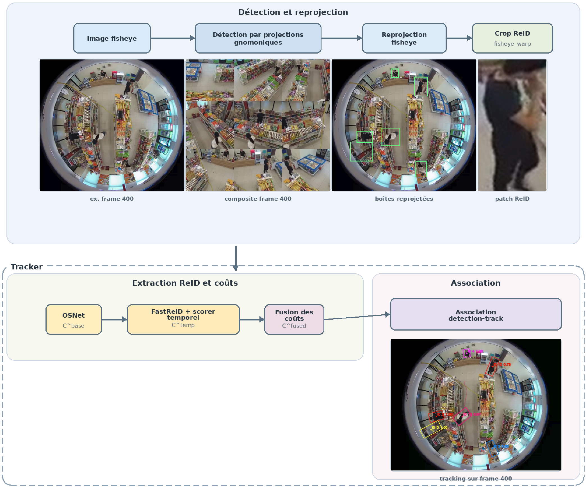
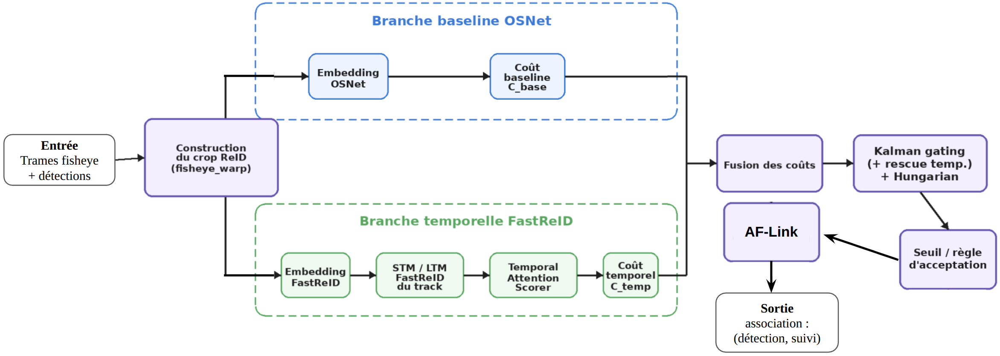
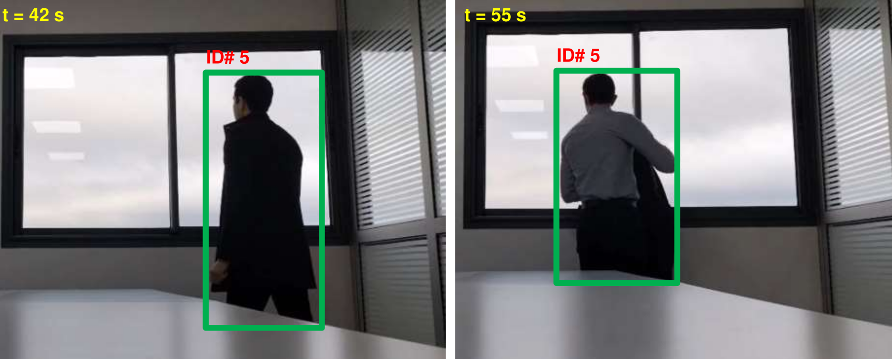
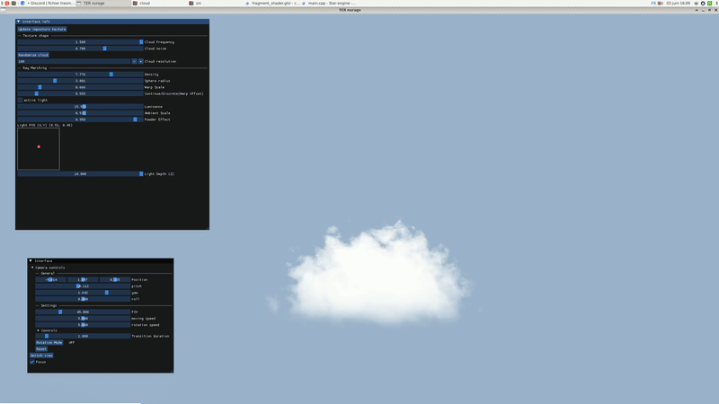

作品集

Caplogy Innovation · 计算机视觉实习 · 2026
FiTAC-MOT——目标外观变化下的鱼眼视频跟踪
面向顶部鱼眼视频构建的多目标跟踪系统，针对服装、配饰、姿态、尺度和视角变化保持行人身份一致性。 系统结合球心投影、YOLOv9e 检测、OSNet/FastReID 外观特征、长短期记忆、 可学习时序关联、匈牙利匹配与 AFLink。
实验结果：在独立测试集 CapFiCA4 上结合 AFLink 达到 61.423 HOTA 和 55.837 IDF1； 在六个 WEPDTOF 跨场景序列上达到 46.573 HOTA 和 56.747 IDF1。
技术栈：Python、PyTorch、OpenCV、YOLOv9e、OSNet、FastReID、注意力机制、TrackEval
完整推理流程

将鱼眼帧投影为相互重叠的球心视图进行行人检测，再映射回原始画面。 在线关联前使用仿射校正生成更规范的 ReID 裁剪图像。
可学习时序关联

我构建了 OSNet 参考分支，以及包含 5 帧短期记忆和 30 帧长期记忆的 FastReID 时序分支。 TemporalAttentionScorer 将 2048 维 ReID 特征投影到 256 维，使用当前检测查询近期记忆， 并通过门控机制学习长期上下文。
数据集与评估

我构建并人工校正了 CapFiCA 数据集，共包含 5 段视频和 4,348 帧，覆盖服装及配饰变化、 遮挡、姿态变化与行人交汇。最终使用独立测试集 CapFiCA4 和六个 WEPDTOF 跨场景序列， 通过 TrackEval 完成评估。

体积云
使用 Ray Marching 与基于物理的光照实现体积云，包括 Beer–Lambert 消光、内外散射和 Henyey–Greenstein 相位函数。项目探索了三种生成方案：基于球体的程序化形状 （Perlin/FBM、域扭曲和重映射曲线）、三维噪声纹理流程以及粒子方案。
技术栈：GLSL、三维纹理、Ray Marching、Beer–Lambert、Henyey–Greenstein、GPU 粒子
基于球体的程序化形状
从基础球体出发依次加入 Perlin 噪声、多倍频 FBM 和域扭曲，再使用 R 曲线重映射塑造 最终密度场，在保证整体形状可控的同时生成丰富细节。

使用 Beer–Lambert 透射率和 Henyey–Greenstein 相位函数计算单次散射，生成柔和阴影以及随视角变化的高光。
三维噪声纹理
预计算三维噪声纹理（Perlin 与 FBM，可选域扭曲），在步进过程中采样并控制密度。 该方案简单、快速且稳定，可按倍频分别调节频率与振幅。
粒子方案
使用 GPU 更新由替身或体素构成的粒子云，适合表现动态行为，但阴影计算和带宽开销较大， 因此作为实验性方案保留。

Star Engine——PBR 与引擎工具链
Star Engine 是在 NITNINDO 团队项目中开发的模块化三维游戏引擎， 使用 C++ 与 OpenGL 构建并进行性能优化。引擎集成完整的基于物理的渲染（PBR）系统， 支持环境立方体贴图、光照探针，以及反照率、法线、粗糙度、金属度和 AO 贴图的材质工作流。
引擎还包含场景编辑工具、引擎内截图系统、八面体阴影映射、骨骼动画 （关键帧插值与顶点着色器蒙皮），以及支持碰撞层和遮罩的刚体物理模块。
技术栈：C++、OpenGL、GLSL、Assimp、ECS、PBR/IBL、骨骼动画、物理系统
Star Engine 展示了灵活的实体组件架构、基于物理着色的实时光照、 八面体阴影投影、GPU 蒙皮，以及用于材质和场景编辑的集成工具。

结合 GAN 的图像去噪自编码器
该项目面向 CIFAR-10 图像去噪，构建结合卷积自编码器与生成对抗网络的 深度学习流程，分别用于特征提取与视觉质量提升。
技术栈：Python、PyTorch、CNN、自编码器、GAN、PSNR/SSIM 评估
项目目标
构建基于学习的图像去噪引擎，恢复包含随机噪声、椒盐噪声、高斯噪声和动态范围扩展噪声的图像。 项目以 128×128 图像为主要输入，通过 PSNR 与可视化对比评估质量。
模型流程（VAE + U-Net + 成对判别 GAN）
- VAE：学习紧凑的潜在表示，并从含噪输入中重建干净图像。
- U-Net 细化：通过跳跃连接保留空间细节并提高重建清晰度。
-
成对判别 GAN（最终稳定版本）：判别器接收
(含噪图像, 干净图像)与(含噪图像, 重建图像)两类图像对， 引导模型更直接地学习噪声残差并提升训练稳定性。
噪声类型
- 经典噪声：随机噪声、椒盐噪声以及不同强度的高斯噪声。
- 动态范围扩展噪声：与经典噪声相比，会产生明显的直方图尖峰。
实验结果（PSNR）
在 128×128 图像上，U-Net 带来了最明显的提升；最终的成对判别 GAN 在保持训练稳定的同时取得了小幅且一致的改进。
- 弱噪声（128×128）：VAE+U-Net ≈ 33.93 dB → +GAN ≈ 34.06 dB
- 强噪声（128×128）：VAE+U-Net ≈ 26.04 dB → +GAN ≈ 26.13 dB
项目总结
- 对整幅图像进行全局判别的 GAN 容易出现训练不稳定或坍塌，限制模型提升。
- 调整 GAN/VAE 的训练节奏并在 VAE 预训练后引入 GAN 可以改善稳定性， 其中最可靠的是成对判别设置。
- 后续可针对不同噪声分别训练模型，再使用分类器识别噪声类型并路由到对应去噪器。
以下视频介绍了项目的完整流程与实验结果。


AI 对抗游戏（Godot）
这是一个智能体对抗仿真游戏，包含负责收集资源的 Starships 和负责防守的 Guardian，两类角色分别由参数可调的不同 AI 策略控制。
技术栈：Godot（GDScript）、状态评估、启发式策略、仿真循环
玩法设计
Starships 尝试从对方区域收集资源并安全返回，Guardian 则通过巡逻进行拦截。 Starships 如果在安全区外被捕获，将失去已收集的资源并重新生成。
AI 策略
项目实现并比较了随机游走、定向追逐、基于半径的检测，以及通过观察学习的“教师型”自适应智能体。 速度、检测半径和追逐行为等参数会直接影响不同角色的成功率。